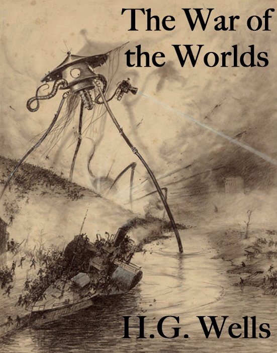
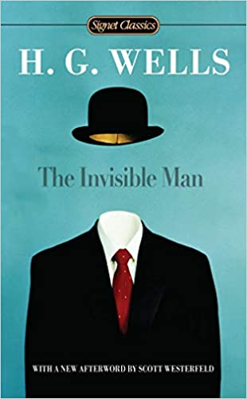

Frankenstein Novel
Novel by Mary Shelley
Plot summary
Frankenstein tells the story of gifted scientist Victor Frankenstein who succeeds in giving life to a being of his own creation. However, this is not the perfect specimen he imagines that it will be, but rather a hideous creature who is rejected by Victor and mankind in general. The Monster seeks its revenge through murder and terror.
Character's
- Colin Clive (Henry Frankenstein)
- Mae Clarke (Elizabeth)
- John Boles (Victor Moritz)
- Boris Karloff (The Monster)
- Edward Van Sloan (Dr. Waldman)
- Dwight Frye (Fritz)
Complete Story of Novel
Frankenstein, the title character in Mary Wollstonecraft Shelley’s novel Frankenstein, the prototypical “mad scientist” who creates a monster
by which he is eventually killed. The name Frankenstein has become popularly attached to the creature itself,
who has become one of the best-known monsters in the history of motion pictures.
Shelley’s novel, Frankenstein: or, the Modern Prometheus (1818), is a combination of Gothic horror story and science fiction. The book tells the
story of Victor Frankenstein, a Swiss student of natural science who creates an artificial man from pieces of corpses and brings his creature to life.
Though it initially seeks affection, the monster inspires loathing in everyone who meets it. Lonely and miserable, the monster turns upon its creator,
who eventually loses his life.The first Frankenstein film was produced by Thomas Edison in 1910. Two German films, The Golem (1914) and Homunculus
(1916), dealt with a similar theme derived from Jewish folklore. The Hollywood film Frankenstein (1931), with Boris Karloff as the monster,
was based as much on The Golem as on Shelley’s novel. This film was a great success and was followed by dozens of variations on the Frankenstein
story in films such as Bride of Frankenstein (1935) and Frankenstein Conquers the World (1969), a Japanese-made version. The character of the monster
has also been used as a vehicle for easy humour—as in Abbott and Costello Meet Frankenstein (1948) and Mel Brooks’s Young Frankenstein (1974).
Frankenstein, American horror film, released in 1931, that was based on a stage adaptation of Mary Wollstonecraft Shelley’s 1818 novel
Frankenstein; or, The Modern Prometheus. The film’s hulking monster, portrayed by Boris Karloff with a flat head and protruding neck bolts, is
one of the most recognizable characters in film history.
The movie begins with a prologue in which the audience is warned about the horrifying tale to follow. At a castle in the Bavarian mountains,
Dr. Henry Frankenstein (played by Colin Clive) and his hunchbacked assistant Fritz (Dwight Frye) succeed in piecing together a human body out
of parts stolen from various corpses. As they prepare to give it life through the application of electricity, they are joined in the laboratory by
Frankenstein’s former professor, Dr. Waldman (Edward Van Sloan), his fiancée, Elizabeth (Mae Clarke), and his friend Victor (John Boles), all of whom
plead in vain for Frankenstein to reconsider the experiment. Unbeknownst to Frankenstein, the brain that Fritz has acquired for their creation is that
of a criminal, which ostensibly explains the monster’s volatile outbursts once it has finally been animated. After killing both Fritz and Waldman in
a violent rampage, the creature escapes from the castle. It later befriends a young girl (Marilyn Harris) in the nearby countryside but then
inadvertently drowns her in a lake. Eventually, a village mob forms and traps the monster in an abandoned windmill, which the mob then sets ablaze,
apparently destroying the monster.
The film spawned a cottage industry of sequels, including Bride of Frankenstein (1935) and Son of Frankenstein (1939), as well as multiple remakes. Scenes that were originally cut or censored from the film, such as the prologue and the drowning scene with the young girl, have since been restored. Makeup artist Jack Pierce, who was responsible for the monster’s distinctive look, went on to create the costumes for several other famous Universal Pictures creatures, including the title characters in The Mummy (1932) and The Wolf Man (1941).
References for More Details
Articles
Further Researches
One Click to Download Book
Download
The World Set Free Novel
Novel by H. G. Wells
Plot summary
The World Set Free is a novel published in 1914 by H. G. Wells. The book is considered a prophetical novel foretelling the advent of nuclear weapons. A constant theme in Wells's work, such as his 1901 nonfiction book Anticipations, was the role of energy and technological advance as a determinant of human progress.
Character's
- The Time Traveller
- The Narrator, Hillyer
- Eloi
- Morlocks
- Weena
- Filby
Complete Story of Novel
During the summer of 1913 Wells wrote to his friend A. T. Simmons: 'I've suddenly broken out into one of the good old scientific romances again, and I want to know quite the latest about the atomic theory and sources of energy.' The 'good old scientific romance' on which he was engaged was The World Set Free: A Story of Mankind, written on a sudden impulse whilst holidaying in the Swiss Alps. This remarkable book, at once prescient and naive, embodies many of his most characteristic themes and in its scenario of world war followed by enlightened reconstruction anticipates much of the substance of The Shape of Things to Come. In the latter work Wells used the device of a partially deciphered manuscript, the 'dream book' of Dr. Philip Raven. In The World Set Free he adopts the pretence of quoting long extracts from Frederick Barnet's Wander Jahre, an autobiographical novel published in 1970. These extracts, describing in considerable detail a war between the European powers breaking out in the year 1956, are among his most impressive sociological forecasts. Reading the book today it is difficult to realise that it was written before the First World War, before the discovery of artificial radioactivity, before the potentialities of the aeroplane as a military weapon had been fully realized. Wells could not have foreseen that 'artificial radium' would be produced by Irene and Frederic Joliot-Curie, the daughter and son in law of Madame Curie, but he was uncannily accurate in forecasting that this discovery would be made in 1933. Fascinating also in the light of Hiroshima and Nagasaki is his forecast of atomic warfare, astonishing in its eerie anticipation of reality, and his prognosis of the stalemate in warfare brought about by nuclear weapons. The weakest section of the book is undoubtedly the account of the sudden outbreak of sanity and enlightenment on the part of the world's politicians, led by 'God's Englishman', King Egbert. The idea that planetary reconstruction could only be achieved through the initiative of an intelligent and exceptional minority was always with him: it was his King Charles's Head. Again and again in his writings we find this emphasis on a world renaissance brought to fruition by and through an elite: in the New Republicans of Anticipations, the Samurai of A Modern Utopia, the Open Conspirators of The World of William Clissold and the 'Modern State' movement of The World Set Free and The Shape of Things to Come. In his sociological works-most notably in Anticipations-Wells presented a reasoned and carefully worked out statement of his theory of world revolution, but the attempts to illustrate his ideas in fictional form were not always successful. King Egbert and his enlightened colleagues appear to a modern reader as impossibly facile, although it has to be remembered that something akin to the same atmosphere of optimism accompanied the activities of President Wilson in 1919 (and President Kennedy in our own time). The transition from world war to reconstruction is unconvincing, and this is perhaps the greatest defect in a story which is in so many respects a forward-looking and even inspiring document. One of the most fascinating figures in the story is Marcus Karenin (oddly reminiscent of Lenin, whom Wells did not meet until1920), whose deathbed valediction has a strong bearing on Wells's own last days. At the end of his life, diseased and ailing, Karenin confides to a friend: 'I do not see why life should be judged by its last trailing thread of vitality. I know it for the splendid thing it is .... I know it well enough not to confuse it with its husks. Remember that, Gardener, if presently my heart fails me and I despair, and if I go through a little phase of pain and ingratitude and dark forgetfulness before the end. Don't believe what I may say at the last. If the fabric is good enough the selvage doesn't matter.' In the light of the pessimism of '42 To '44 and Mind at the End of
References for More Details
Articles
Further Researches
One Click to Download Book
Download
Dr. Jekyll and Mr. Hyde Novel
Novel by Robert Louis Stevenson
Plot summary
Strange Case of Dr Jekyll and Mr Hyde by Robert Louis Stevenson is a narrative about the complexities of science and the duplicity of human nature. Dr Jekyll is a kind, well-respected and intelligent scientist who meddles with the darker side of science, as he wants to bring out his 'second' nature.
Character's
- Dr. Jekyll
- Mr. Hyde
- Mr. Gabriel Utterson
- Dr. Hastie Lanyon
- Mr. Enfield
- Poole
- Sir Danvers Carew
Complete Story of Novel
Mr. Utterson is a lawyer. He is reserved but kind and is known for loyally sticking by his friends even when they do wrong. One of his unlikely friends is Mr. Enfield. One Sunday, as the pair is taking a walk, they come across a somber looking door belonging to a house that Enfield knows well. Enfield tells the story of a horrible incident, in which a man trampled a young girl and, when apprehended, seemed remorseless but agreed to pay a large check when threatened by the police. He disappeared into this very house and revealed a check signed by a well-known and respected name. Mr. Utterson and Mr. Enfield agree that it is best not to talk any further about the matter but Utterson is deeply affected, because he knows the person that Enfield describes who trampled the girl. One of his clients, Dr. Jekyll, has recently made a will and has left everything to a Mr. Hyde, rather than his own family. He visits Dr. Lanyon, an old friend of Jekyll's who has had a falling out with Jekyll over what he considers to be his old friend's unscientific methods. Lanyon has never heard of Mr. Hyde, causing Utterson to worry even more about Jekyll’s safety. He has nightmares of Jekyll being woken in his bed by this blackmailing fiend. So, Utterson decides to spy on the strange house, the scene of the crime. Finally one night, he sees Hyde approach and confronts him and senses the same air of evil about the man that Enfield described. He goes to Jekyll’s house and, finding Jekyll absent, asks Poole, a servant, about Mr. Hyde. Poole has been instructed to treat Mr. Hyde almost like a master, continuing Utterson’s anxiety. Soon after, at one of Jekyll’s customary dinner parties, Utterson stays behind and asks his friend what the matter is, but Jekyll will not confess, he only cryptically says that he can choose to be free of Hyde whenever he likes. A year passes, and again Hyde is involved in a horrific crime, this time the murder of a respected old man named Sir Danvers Carew. Because Sir Carew was a client of Utterson’s, the police come to him, and Utterson takes them to Hyde’s address, but they find nothing amiss in his rooms, only a burnt-out end of a checkbook. Utterson visits Jekyll, who claims that he is finally finished with Mr. Hyde; he even shows Utterson a letter from Hyde to the same effect. But when Utterson goes home, and sits with his trusted clerk, a handwriting expert, the letter turns out to be written in Jekyll’s own hand instead. This brings back Utterson’s suspicions of blackmail. After the horrific murder of Carew has become public news, Jekyll is back to his old self and regularly entertains his friends. But after two months, Utterson is turned away from Jekyll’s door and once again the doctor becomes a recluse. When Utterson goes to ask Dr. Lanyon about it, Lanyon is a changed man – he says he has had a shock that will soon kill him. Though he will not say the nature of what happened between him and Jekyll, Lanyon gives Utterson a letter to read when Jekyll is dead. Utterson, after a while, pays Jekyll fewer and fewer visits, but one day, when out walking with Enfield, they pass his old lab (which the "somber" door leads into) and decide to go through the yard and say hello at the window. Jekyll greets them but is overtaken by a strange mood and disappears from the window. A few weeks later, Poole visits Utterson in a panic and persuades him to come to the house, where Utterson finds all the servants cowering in fear of their changed master. Jekyll has locked himself away and the voice that comes from his cabinet (the upper room of his laboratory) is not his but Mr. Hyde’s. Utterson and Poole, thinking Jekyll has been murdered, break in to the cabinet. They find Hyde’s dead body on the floor and some documents, including a letter from Jekyll, saying that it is time for him to reveal the truth. Utterson takes these documents home to read. First, he reads the narrative given to him by Dr. Lanyon. He explains the shock that has taken his life. He was asked by Jekyll to fetch him a drawer of ingredients from Jekyll's lab for an experiment and to await a visit from a man. This, Lanyon did, very curious now about Jekyll’s secret. When the visitor arrived—who from Lanyon's description is clearly Mr. Hyde—he makes a potion and drinks it. His body begins to warp. When this horrific display is done, Dr. Jekyll is standing before Lanyon. Next, Utterson reads Dr. Jekyll’s own confession. Jekyll describes his theory that all human beings have two natural selves, one good and one evil. He has felt this way all his life and has now succeeded in finding a way to separate the two. He describes from his own point of view all the events that his friends have witnessed. At first, the ability to become Mr. Hyde gives Jekyll a freeing new life in which he can indulge his basest instincts, but soon Mr. Hyde begins to do unspeakable things, such as murder Carew. Jekyll decides to cease transforming into Hyde, but one day, in a park, Jekyll turns into Hyde involuntarily—without taking the potion. That is when he must confess to Lanyon to procure the chemicals he needs to transform back. Jekyll returns home but again Hyde takes over, now actively resentful of Jekyll, and Jekyll is forced to lock himself in his lab and send Poole out for more chemicals. But the potion has lost its effectiveness and as he writes the last of his confession, he is using the last of the original powders and anticipates turning finally into Mr. Hyde forever. No longer inspired by his belief in a double nature, he believes that this moment will be a complete end to him, and that Hyde will go on as a separate being, left to deal with his new undivided condition.
Articles
Further Researches
One Click to Download Book
Download
Stand on Zanzibar Novel
Novel by John Brunner
Plot summary
The book centres on two New York men, Donald Hogan and Norman Niblock House, who share an apartment. House is a rising executive at General Technics, one of the all-powerful corporations. Using his "Afram" (African American) heritage to advance his position, he has risen to vice-president at age twenty-six.
Character's
- Norman Niblock
- Chad C. Mulligan
- Shalmaneser
Complete Story of Novel
Stand on Zanzibar is a New Wave science fiction novel. According to Wikipedia:
“New Wave is a movement in science fiction produced in the 1960s and 1970s and characterized by a high degree of experimentation, both in form and in content, a “literary” or artistic sensibility, and a focus on “soft” as opposed to hard science. New Wave writers often saw themselves as part of the modernist tradition and sometimes mocked the traditions of pulp science fiction. . . “
It’s always fun when authors predict a future that is the future for them, but is the past for us. Like when a book takes place in 2010, or a tv show from the 70s takes place in 1999, and now we get to see what they got right and what they got hilariously wrong. Stand on Zanzibar takes place in 2010, and it’s a little creepy what Brunner got right. First, a few words about the title. The title is refers to this phrase that has to do with overpopulation:
It’s always fun when authors predict a future that is the future for them, but is the past for us. Like when a book takes place in 2010, or a tv show from the 70s takes place in 1999, and now we get to see what they got right and what they got hilariously wrong. Stand on Zanzibar takes place in 2010, and it’s a little creepy what Brunner got right. First, a few words about the title. The title is refers to this phrase that has to do with overpopulation:
And overpopulation is a huge theme of Stand on Zanzibar. Earth has 7 to 8 billion people, The United States is bursting at the seams with 400 million. Many single family homes have been chopped up into smaller and smaller often one room residences, and any kind of privacy costs a fortune. To keep populations down, most states in the US have instituted some type of eugenics law, where for example, if you have the genes for hemophilia or color blindness, you are not allowed to have children. Abortions are easy to obtain, and often forced. There are options for adoption, but many couples simply opt to not have children, while openly resenting the family across the street who was approved for two children.
Many of the subplots involve attitudes about having children, race relations, post-colonialism, and populations turning into sheep. Once i realized the timing connections, the out-dated post colonialism attitudes of some of the characters became clear, as the 1960s was a time of British crown colonies gaining independence and becoming what we now know as Lesotho, Guyana, Sierra Leone and Jamaica, to name a few. A lot of privileged Brits were suddenly being told they weren’t in charge anymore.
The main characters of the novel are Norman House, Donald Hogan, and Chad Mulligan. Norman is an executive with General Technics, the company that makes everything, and most importantly the company who owns Shalmaneser, the smartest computer on Earth. A Muslim African American, Norman rose through the ranks at GT via affirmative action, and there is quite the character study regarding how he is treated (or thinks he is being treated) by non-blacks and non-Muslims. His roommate is Donald Hogan, a professional student. Secretly recruited by the government to be a synthesist, Donald spends much of his day in the library reading up on current events, and making connections between seemingly unrelated events. Chad is a sociologist who is desperate to retire. He’s the Michael Moore/Morgan Spurlock type character, who tries over and over to tell people what is happening around them.
I had a tough time getting into Stand on Zanzibar for two reasons, both of which resolved themselves quickly, and were certainly part of that New Wave-ness. First, the way the story is presented; and second, the language. The story is presented in chapters of three different types – one type following Donald and Norman, another type offering vignettes of what is happening elsewhere, either with minor characters or outside the US,, and the third type called “context”, which in a channel surfing style offers snippets of conversations or tv shows or billboards, or even long snippets of Chad Mulligan’s books. Language was a two pronged bugger. there is a lot of Clockwork Orange style slang that took me forever to figure out: “poppa-momma” is pm (like 10pm), “anti-matter” is am (like 8am), “sheeting” is fucking (as in “you sheeting idiot”. a really fun play on words, actually!), “prodgies” are children, and “bleeder” is a wildly offensive insult meaning the person has hemophilia or any other undesirable genes and that they should never be allowed to have children. There was also a lot of racially charged language, and my assumption is that Brunner used them for shock value.
The plot meanders all over the place, often offering little vignettes of minor characters so we can see a better cross section of the population. This is *not* a fast moving novel, and I don’t mind that I’d done some research ahead of time, because the storytelling style sure was not going to tell me what the main plot was. Around half way through the book, Norman and Donald receive their important “missions”. General Technics is getting involved in industrialization of a fictional African nation of Beninia, and Norman, being African American, is judged by his employer as the best guy to be the company ambassador, so off to Beninia he goes. Donald is called up by the government and “eptified” to act as a secret agent in a fictional southeast Asian county of Yatakang. He’s to meet with their foremost geneticist to see if the man’s claims about creating “designer babies” is true. I suppose these are the main action sequences in the book? Honestly I found most of the second half to be completely boring. The government of Beninia was quite fascinating, and there were a few James Bond-ish moments with Donald, but the lead up to these events was far more interesting than what happened when they got there.
My favorite parts of the book were Chad’s interactions with other characters. He’s been locked in an Idiocracy style story, where no matter how he begs people to act like intelligent human beings and open their eyes to what society is pushing on them, their response is to pop a trank (tranquilizer) which to me is just another version of “but it’s got electrolytes!” Beyond dystopia, this is a very nihilistic view of the future.
This was seriously the book that would not end. I’d read for hours and hours, and you still have two hundred pages to go, it was like the Groundhog Day of books. The prose is very dense, with the vast majority of the book being subplot, and introductions to characters who are only briefly if ever mentioned again. It was probably a mistake to try to finish reading this book in six or seven days, I think i would have done better with it had I read it for a few days, put it down, and picked it up again a few days later, instead of trying to bash my way through it.
There’s been some discussion online over the years about what Brunner got right about the future. Religious backlash against family planning/ availability of abortions? check. People being encouraged to medicate their stresses away? check. Police riots? check. Detroit being a wasteland after car manufacturers have downsized? check. There are others as well, but those were the most entertaining for me.
Stand on Zanzibar is one of those books that I’m happy I read, but that I don’t see myself ever reading again. I’ve got Brunner’s Players in the Game of People as well, and as it is a much, much shorter book, I’ll probably read it at some point.
References for More Details
Articles
Further Researches
One Click to Download Book
Download
The Time Machine Novel
Novel by H. G. Wells
Plot summary
A group of men, including the narrator, is listening to the Time Traveller discuss his theory that time is the fourth dimension. The Time Traveller produces a miniature time machine and makes it disappear into thin air. The next week, the guests return, to find their host stumble in, looking disheveled and tired. They sit down after dinner, and the Time Traveller begins his story. The Time Traveller had finally finished work on his time machine, and it rocketed him into the future. When the machine stops, in the year 802,701 AD, he finds himself in a paradisiacal world of small humanoid creatures called Eloi. They are frail and peaceful, and give him fruit to eat. He explores the area, but when he returns he finds that his time machine is gone. He decides that it has been put inside the pedestal of a nearby statue. He tries to pry it open but cannot. In the night, he begins to catch glimpses of strange white ape-like creatures the Eloi call Morlocks. He decides that the Morlocks live below ground, down the wells that dot the landscape. Meanwhile, he saves one of the Eloi from drowning, and she befriends him. Her name is Weena. The Time Traveller finally works up enough courage to go down into the world of Morlocks to try to retrieve his time machine. He finds that matches are a good defense against the Morlocks, but ultimately they chase him out of their realm. Frightened by the Morlocks, he takes Weena to try to find a place where they will be safe from the Morlocks' nocturnal hunting. He goes to what he calls the Palace of Green Porcelain, which turns out to be a museum. There, he finds more matches, some camphor, and a lever he can use as a weapon. That night, retreating from the Morlocks through a giant wood, he accidentally starts a fire. Many Morlocks die in the fire and the battle that ensues, and Weena is killed. The exhausted Time Traveller returns to the pedestal to find that it has already been pried open. He strides in confidently, and just when the Morlocks think that they have trapped him, he springs onto the machine and whizzes into the future.
Character's
- The Time Traveller
- The Narrator
- The Eloi
- The Morlocks
- Weena
Complete Story of Novel
The Time Machine is a work of science-fiction that imagines how the social conditions of Victorian England have evolved in the year 802,701. The story opens on a dinner party at the home of an eminent scientist, the Time Traveller, who is explaining to his assembled guests (including the narrator telling the story) principles of science and math that support the possibility of traveling across time, just as one would travel across space. His guests are upper class British men—a doctor, a psychologist, a journalist, etc.—and they greet his pronouncements with skepticism. To demonstrate the validity of his ideas, the Time Traveller brings into the living room a small model of a machine. The psychologist, ever skeptical, depresses a lever and the machine disappears. The Time Traveller then reveals that he has almost completed a life-sized machine that will transport him through time. He shows the machine to the guests, but they remain skeptical. At dinner the following week, the Time Traveller is not there to greet his guests. He has left a note instructing them to proceed with dinner if he is late, and partway through their dinner the Time Traveller staggers into the house looking disheveled and injured. Once the Time Traveller has washed up, he agrees to tell his story in full on the condition that nobody argues with him or asks questions, since he is terribly exhausted. The Time Traveller says that the previous week he finished his machine and took a voyage into the future. He arrived in the year 802,701 on the spot where his laboratory once stood—it had become a garden of strange flowers beside a large white Sphinx statue. He saw small humanlike beings (whom Wells later reveals are called the Eloi), and they seemed feeble and much less intelligent than he hoped the people of the future would be. The Time Traveller continues his tale: the beings are friendly to him, and he begins to explore the landscape for clues to what has happened. There seems to be no adversity, fear, or labor in this world, and the Time Traveller hypothesizes that this is a communist utopia of the future, in which all social problems have been solved. He believes that this explains the weakness and stupidity of the beings—there is no need for force or intelligence in a world of peace and plenty. The Time Traveller is briefly delighted, but, despite thinking that all problems are solved, he still feels disappointed that future humans are not smarter or more curious. When the Time Traveller returns to the garden where he landed he realizes that his time machine is gone. He briefly goes into a rage-fueled panic, and then decides that the rational course of action is to study this new world, learn its ways, and let this knowledge lead him back to the time machine. Seeing grooves in the grass leads him to believe that the machine has been hidden behind a metal panel in the pedestal of the Sphinx statue, but it won’t give when he tries to open it. The Time Traveller begins learning the language of the Eloi (which is very simple) and he explores the landscape, noticing a strange network of dry wells and towers, which suggests a large underground ventilation system. He also notices that the Eloi never seem to do any work, but their sandals look new and their clothes are not frayed. This observation, combined with his having felt something touching him at night and having caught a glimpse of a strange white animal, leads him to determine that his original utopian explanation is inadequate. Later that day he rescues a drowning Eloi. Her name is Weena, and she begins giving him flowers and following him everywhere to express her gratitude. Weena’s agony whenever he leaves her and her fear of the dark make the Time Traveller realize that the Eloi are not without fear and danger. One morning while seeking shelter from the heat he sees a white ape dash down the shaft of one of the wells he had previously observed. The Time Traveller concludes, feeling disgusted, that the Eloi are not the only species that have evolved from humans of his day: the Morlocks, as the ape beings are called, are human descendants, too. The Time Traveller determines that the Eloi and Morlocks evolved as such because of the entrenched class divisions of Victorian England. The Eloi are the descendants of the British elite, and the Morlocks the descendants of the British poor—the Eloi, the Time Traveller believes, have been exploiting the Morlocks for centuries, and, as a result, have easy lives. Meanwhile, the Morlocks, toiling underground for the Eloi, can no longer bear to be in the light—their eyes have evolved in a way that light pains them. Knowing that knowledge of the Morlocks might lead him to his time machine, the Time Traveller descends into one of the wells where he sees a room full of Morlocks and machines. He sees them eating meat, which tells him they are carnivorous, unlike the Eloi. When several Morlocks attack him, he uses matches to fend them off and barely escapes. He has a sense that the Morlocks are evil. To search for weapons against the Morlocks, the Time Traveller and Weena voyage to a large green building that the Time Traveller had seen in the distance. On the way, Weena puts flowers in the Traveller’s pocket, as a kind gesture. He realizes while walking that the Morlocks are cannibals—they eat the Eloi—and this is the source of Weena’s great fear. The trip takes two days, but the green building turns out to be an abandoned museum, and inside it he finds a preserved box of matches and an iron bar he can use as a weapon. He and Weena head back for the garden with the goal of retrieving the time machine from the Sphinx statue. The Time Traveller knows he will have to stop somewhere for the night, so he gathers kindling as they walk in order to start a fire that will keep them safe from Morlocks. Walking through a thick wood, the Time Traveller feels the Morlocks grabbing at him, so he puts his kindling down and sets it ablaze to protect them as they walk on. Outside the sphere of light, though, the Morlocks return and Weena faints. The Time Traveller starts a fire and falls asleep. When he wakes up the fire is out, Weena is gone, and the Morlocks are attacking him. He fends them off with the iron bar and then realizes that his previous fire had started a forest fire, and the Morlocks are fleeing the blaze rushing towards him. The Time Traveller runs, too—he escapes, but Weena dies, and his matchbox disappears. He only has a few loose matches in his pocket as tools to get his time machine back. Back at the Sphinx, the Time Traveller sleeps. When he awakens, the panels on the pedestal are open and he sees his time machine in plain sight. He casts aside his iron bar and enters the Sphinx, but as soon as he does the panels close and he is left in darkness with the Morlocks. Moreover, his matches don’t work because they are the kind that must be struck on the box. He fights them off enough to get on his time machine and pull the lever, barely escaping into the future. The Time Traveller finds himself thousands more years in the future on a desolate beach where menacing giant crabs roam. He moves farther into the future to escape them, noticing the sun getting larger, the earth getting colder, and the air getting thinner. As signs of life wane, the Time Traveller gets scared and decides to return home. He pulls the lever and travels back to his dinner guests, disheveled and injured from his adventures. While his guests remain skeptical of his adventures—his only evidence is that his time machine is dirty and dented and he has the strange flowers from Weena in his pocket—the narrator is inclined to believe. The narrator returns the next day and finds the Time Traveller preparing for another voyage. The Time Traveller tells the narrator to wait for him for a half hour, but the narrator says, sadly, that it has been three years and the narrator has not returned.
Articles
Further Researches
One Click to Download Book
Download
The War of the Worlds Novel

Novel by H. G. Wells
Plot summary
The War of the Worlds chronicles the events of a Martian invasion as experienced by an unidentified male narrator and his brother. The story begins a few years before the invasion.
Character's
- The Narrator
- The Artilleryman
- The Curate
- The Narrator’s Brother
- The Narrator’s Wife
- Ogilvy
- Mrs. Elphinstone
- The Innkeeper
- Henderson
Complete Story of Novel
During the astronomical opposition of 1894, when Mars is closest to earth, a number of observatories spot a flash of light emanating from the red planet’s surface. Night after night, the planet seems to ignite for a moment. The narrator himself witnesses this through a telescope owned by his friend, an astronomer named Ogilvy. Although both men are excited, Ogilvy assures the narrator that it’s quite unlikely there are living beings on Mars. The local newspapers, for their part, are slow to report on the anomaly, and when they do, they don’t ascribe much significance to it. In the small hours of morning after many consecutive nights of the strange Martian flashes, a greenish flame sweeps across the sky and crashes into a sandpit near Ogilvy’s house in Horsell, England. Thinking he’s seen a meteor, he rushes outside to find the object. When he arrives, he finds a large cylindrical mass embedded deep in a crater caused by its own impact. As he watches, the end of the projectile begins to unscrew, and he sees what he thinks are men, half burnt to death, trying to escape from inside. Scrambling out of the pit, Ogilvy runs toward Woking, where he meets a wagoner who ignores him because he looks and sounds insane. Finally, Ogilvy finds Henderson, a journalist from London who quickly follows him back to the pit before sending a telegraph to London. Slowly but surely, the cylinder from Mars attracts large crowds, which stand around the edge of the pit waiting for something to happen. It seems the cylinder is about to open when the heavy lid finally falls to the ground, causing the panicking crowd to go quiet. From the dark cavity emerges a dark, greyish creature, about the size of a bear, with “luminous discs” for eyes and snake-like tentacles. Just as this creature emerges into the pit, a new one appears in the opening of the cylinder, at which point the narrator sprints toward the trees for cover. Looking back, he sees the head of a man who had fallen into the pit try to escape before suddenly falling backward with a scream. While the narrator slinks through the woods—too afraid to go near the pit—a group of men (including Ogilvy and Henderson) approach the cylinder with a white flag. As they near the Martians, a blinding light jumps forth and incinerates them. The crowd breaks into terror as the Martians start wreaking fiery havoc on Horsell Common, burning people and trees and everything in the vicinity. The narrator goes home, where he finds his wife and tells her everything he’s seen. He and his wife sit down to dinner and eat a calm meal while he assures her that the aliens won’t harm them because the force of gravity on earth is too strong to allow Martians to roam freely across its surface. This seems to quell both his and her nerves, despite the fact that the narrator obtained this information from Ogilvy, who has just been killed by Martians. The next day, with the memory of the Martians fresh in their minds, the narrator’s fellow Englishmen surprisingly go about their everyday duties. Some people talk about the disaster excitedly, as if discussing entertaining current events. Meanwhile, a group of soldiers approaches Horsell Common and establishes a perimeter around the pit. Late that night, another cylinder falls from the sky, landing not far from the first. The next day, fighting breaks out between the humans and the Martians, and it quickly becomes clear that human weapons are no match for the Martians’ Heat-Ray. The narrator and his wife decide to escape to the house of some relatives in Leatherhead, a short trip from their home in Woking. The narrator goes to a nearby inn and borrows a horse and a cart, which he uses to transport his wife to Leatherhead before turning back to Woking to give back the horse, having promised the innkeeper to have it back by midnight. By the time he makes it back to Woking, however, a third cylinder has arrived, and he looks up from the road to catch sight of a terrifying image: a large machine with three legs towering in the distance. The machine goes about smashing everything in its way while firing a Heat-Ray, and the narrator abandons the horse. Not long after, he finds the innkeeper’s dead body, and then makes his way to his own house, where he takes refuge for the night. While hiding in his house, the narrator meets an artilleryman who has fled the pit and stumbled onto his property. The artilleryman tells him about the destruction wrought by the Martians and their fighting machines. The two men decide to set out together, the narrator wanting to meet up with his wife in Leatherhead, the artilleryman hoping to meet up again with his battery. On their way, they encounter scores of people running madly from five fighting machines, which discharge their Heat-Rays, torching everything around them. Realizing that water will protect him from the Heat-Ray’s blasts, the narrator jumps into a stream, and others around him follow suit. At the same time, a large gun hidden by military fighters fires a shot that explodes in the face of one of the fighting machines. This shot takes down the machine, and the other machines flock to their fallen comrade before unleashing total fury onto the landscape with the Heat-Rays. The narrator passes out on the riverbank, narrowly avoiding getting stepped on by a machine before he’s left alone. The fighting machines return to their pit in Horsell Common, pulling their dead friend along with them. Meanwhile, the narrator notes that a new cylinder arrives every day, and the Martians grow increasingly powerful as they build their machines, which apparently can also discharge a deadly black smoke. During this time, the narrator wanders through the woods and eventually comes upon a frightened, hysterical curate, who asks the narrator what sins they could have committed to deserve such a punishment. The narrator responds by telling the curate to be a man, and asks what religion is good for if it “collapses under calamity.” Although he dislikes the curate, the narrator agrees to travel with him, and they set off so as to avoid encountering the Martians again. At this point, the narrator tells the story of his brother’s experience during the Martian invasion. A medical student in London, his brother doesn’t hear about the Martians’ arrival for several days. When he finally does, he decides to visit his brother in Woking, hoping to see the aliens before they’re killed by military forces. When he goes to the train station, however, he learns that no trains are running in that direction due to an accident. Throughout the next day, he buys multiple newspapers in an attempt to gather more information about the invasion. When all at once Londoners are told to evacuate the city, he steals a bike from a ransacked cycle shop and rides out of town, eventually coming upon two women getting robbed. After he fends off the criminals, the brother joins these women in their carriage, and the three of them decide to combine their money in order to buy tickets out of the country on a boat. The brother’s story concludes as he sails into the distance while watching an extravagant battle between a warship called the Thunder Child and three Martian fighting machines. As the narrator’s brother escapes England, the narrator and the curate continue their travels, eventually finding a well-stocked kitchen in an abandoned home. As they sit in this dark place, the sky lights up green and a huge crash sounds, ruining the house and knocking the narrator onto the floor, where he lies unconscious for several hours. When he comes to, the curate tells him to be quiet because the Martians are right outside. Apparently, a new cylinder has arrived, landing almost on top of the house in which they’re hiding and disabling them from leaving. Over the course of fourteen days, the narrator lives in hiding, afraid to even speak in full volume to the curate. They periodically sneak from the pantry to the kitchen and peer through a hole in the wall. This is how the narrator learns that the Martians feed by extracting the blood of living humans, emitting a strange howl all the while. Although the kitchen contains some provisions, the narrator realizes that they’ll soon run out of food. The scarcity of rations is exacerbated by the gluttonous curate, who is constantly stuffing his face. Hoping to increase their chances of survival, the narrator implements a rationing scheme, cutting the curate off when he’s had too much. This deeply upsets the curate, who grows more and more unhinged until, finally, he has lost his mind. When the curate begins making too much noise, the narrator knocks him unconscious, but it’s already too late; a Martian appears at the hole in the wall. Quickly, the narrator retreats to the coal-cellar, where he shuts the door and covers himself with coal. The Martian eventually creeps toward him and opens the door but doesn’t notice him. It isn’t until several days later that he dares to venture out of the cellar, only to find that the curate is dead and the Martians have moved on. Out in the open again, the narrator once more encounters the artilleryman, who tells him what has happened in the past couple of weeks. “We’re beat!” he insists, going on to explain to the narrator that the Martians seem to be developing flying machines. Under these circumstances, the artilleryman has resolved to live the life of a “rat,” admonishing fellow humans who don’t have what it takes to survive. He tells the narrator of his plan to tunnel his way into the sewers of London, where he’ll live with a community of like-minded people—including the narrator—until perhaps one day he can learn how to hijack one of the Martians’ fighting machines. Impressed by how well-thought out this plan seems, the narrator accompanies the artilleryman back to a house, where the two men work for hours digging in the basement in order to intersect the sewer system. However, the narrator slowly realizes the artilleryman’s plan is doomed to fail, and he leaves the next morning, setting off for London. When the narrator arrives in the city, he finds it desolate. The Martians have taken over all of London and their machines now stand tall and powerful throughout the city. A ghostly howl echoes through the streets as the narrator makes his way toward a fighting machine. To his surprise, it does nothing, simply standing still as he approaches. Finally, he comes upon a huge mound at the top of a hill where the Martians seem to have made their largest dwelling area yet. As he looks up at one of the enormous stationary machines, he sees red weed and decay seeping out of the cockpit, and realizes that the Martians must have died of a bacterial infection. In the weeks, months, and years that follow, the world learns that the immune systems of these otherworldly creatures weren’t prepared to defend against earthly bacteria, so their bodies couldn’t handle the infection. In the wake of the Martians’ short stay, humanity rebuilds itself, but the narrator warns against relaxing into a state of comfort, reminding readers that the invaders could come again. Next time, he hopes the human race will be more prepared.
Articles
Further Researches
One Click to Download Book
Download
The Invisible Man Novel

Novel by H. G. Wells
Plot summary
The Invisible Man, science-fiction novel by H.G. Wells, published in 1897. The story concerns the life and death of a scientist named Griffin who has gone mad. Having learned how to make himself invisible, Griffin begins to use his invisibility for nefarious purposes, including murder.
Character's
- Griffin/The Invisible Man
- Mrs. Hall
- Thomas Marvel
- Doctor Kemp
- Mr. Wicksteed
- Millie
- Fearenside
- Dr. Cuss
- Mr. Bunting
- Sandy Wadgers
- Bobby Jaffers
- Gibbins
- Mr. Huxter
- Barman
- Colonel Adye
- Mr. Heelas
- Lord Burdock
- Kemp’s Servant
Complete Story of Novel
A strange man (later introduced as Griffin) arrives in Iping and takes lodging at the Coach and Horses Inn. He is completely wrapped up in clothing, which he does not take off even after Mrs. Hall, who runs the inn, lights a fire for him. Mrs. Hall notices that Griffin’s face is also wrapped in bandages. Griffin is rude to her, and impatiently asks when he will be able to get his luggage from the train station. Later that day, Griffin explains that he is an “experimental investigator” and that he needs his equipment. The following day, the carrier Fearenside brings Griffin’s luggage, which is filled with scientific equipment, handwritten notebooks, and crates of fluids, some of which are labeled Poison. Later that day, Mrs. Hall hears the sound of bottles smashing, and when she asks Griffin about this he tells her not to bother him, saying that she can add extra charges to his bill. Griffin stays at the inn for a number of months. He does not attend church or communicate with anyone outside of the village, and only goes out at night. The villagers gossip, inventing many different theories about him. The local doctor, Cuss, visits Griffin at the inn, and is shocked to see that his sleeve is completely empty where an arm should be—yet he still manages to pinch Cuss’s nose. On the holiday of Whit Monday, Rev. Bunting and Mrs. Bunting wake up to sounds of the vicarage being burgled. They try to catch the robber, but cannot see anyone there. The same morning, Mr. Hall and Mrs. Hall notice that the door to Griffin’s room is open, and his bed is empty. They call Sandy Wadgers, the blacksmith, to change the locks so they can lock Griffin out, but while they are discussing this Griffin emerges from his room (though it had seemed empty before) and goes into the parlor, which he has been using as a personal study. He locks himself in and can be heard shouting and smashing things. Later, Mrs. Hall asks Griffin why he hasn’t paid his bill; when he offers her money, she is suspicious, as just days before he said he didn’t have anything. When confronted by the villagers at the inn, Griffin takes off his bandages to reveal a “black cavity”—his invisible face. On learning the truth about Griffin, the villagers flee in horror. The local constable, Bobby Jaffers, attempts to arrest Griffin for burgling the vicarage, but fails and Griffin escapes. Outside of Iping, Griffin seeks the help of a local “tramp,” Thomas Marvel. At first Marvel thinks he’s hallucinating when he hears a disembodied voice talking to him, but Griffin proves that he is real and invisible by throwing stones at him. Amazed, Marvel agrees to help Griffin, and returns to the Coach and Horses, where he seizes some of Griffin’s belongings from his room, including his notebooks. Dr. Cuss and Rev. Bunting had previously looked through the notebooks while Griffin was gone, but couldn’t understand their contents. Mr. Huxter attempts to catch Marvel but fails. Griffin smashes the windows of the inn and cuts the village’s telegraph wire before fleeing. Everyone in Iping is too scared to come out of their houses for two hours. Marvel tries to quit his role as Griffin’s helper, but Griffin threatens to kill him if he betrays him. The next day, Marvel and Griffin reach the town of Port Stowe, and Marvel strikes up a conversation with a local mariner. The mariner tells him the rumors about the Invisible Man and shows him a newspaper article about the events in Iping. Marvel boasts that he knows about the Invisible Man from “private sources,” but after Griffin hurts him he goes back on his word and tells the mariner that the whole story is a hoax. The narrative shifts to a man named Doctor Kemp as he sits in his office, which overlooks the town of Port Burdock. He is dismayed by local gossip about the Invisible Man and the “fools” who believe the story is real. Nearby, Marvel bursts into the Jolly Cricketers pub, explaining in terror that he needs help because the Invisible Man is after him. Griffin enters the pub too and there is a scuffle. One of the men in the pub shoots the air, attempting to hit Griffin. Doctor Kemp’s doorbell rings, but his servant tells him that no one was there when she answered. Kemp then finds blood on his bedroom door handle and floor. In his bedroom, Griffin speaks to Kemp, and at first Kemp refuses to believe that he is really there. Griffin introduces himself, reminding Kemp that they studied together at University College London. Kemp eventually believes Griffin and gives him food and whiskey. He allows Griffin to sleep in his bedroom, and when he goes to sleep worries that Griffin might be insane and “homicidal.” The next day, Griffin tells Kemp that years earlier, while researching light and optics, he discovered a way of turning living tissue invisible. He kept his findings to himself, worried that someone would steal them. After spending three years researching invisibility, Griffin realized that he would need money in order to actually conduct the experiment. He stole money from his father that did not actually belong to him, which led his father to shoot himself. Griffin admits that he did not feel guilt or sympathy for his father. Griffin says he first tested his invisibility experiment on a piece of fabric, and then on his neighbor’s cat. The cat’s pained meowing awoke his landlord, who grew suspicious of Griffin’s activities. Griffin then conducted the experiment on himself, successfully turning himself invisible. Aware of his landlord’s suspicions, he set his apartment on fire and fled. Out in the world, Griffin found it harder than he assumed to be invisible. He regularly bumped into people, was freezing because he could not wear clothes without being seen, and couldn’t eat, as food showed up in his stomach before it was fully digested. He robbed two different stores, but each time got perilously close to being discovered. He was eventually able to rob clothing and other items to disguise himself, wrapping himself up to conceal his invisibility from the world. He eventually traveled to Iping, hoping to continue his scientific research there. Griffin tells Kemp that he plans to impose a “Reign of Terror,” killing people as he sees fit, in order to institute “the Epoch of the Invisible Man.” He hopes that Kemp will work with him, but Kemp warns him that he is choosing the wrong path. Colonel Adye then arrives at Kemp’s house, and on hearing this, Griffin shouts “Traitor!” and flees. Adye and Kemp warn everyone in the local area about Griffin’s plans, and a manhunt begins. Mr. Wicksteed, the steward to Lord Burdock, is found murdered on the grounds of Lord Burdock’s house. No one knows exactly what happened, but everyone agrees Griffin is responsible. Griffin attacks Kemp and Adye at Kemp’s house, shooting Adye with his own gun. Kemp flees, begging for help from his neighbor Mr. Heelas, who refuses. Kemp runs into town being chased by Griffin. A mob of people descends on Griffin, and although Kemp begs them to have mercy, Griffin is beaten to death. His body becomes visible again as he dies. In the epilogue, the narrator explains that after Griffin’s death, Marvel used the money he stole from him to become a landlord. He is now a respected man in the local area who has a “reputation for wisdom.” Sometimes Marvel shares his stories of the Invisible Man with passersby. However, he never reveals that he kept Griffin’s notebooks, which he keeps stored secretly and whose contents he does not understand.
Articles
Further Researches
One Click to Download Book
Download
Twenty Thousand Leagues Under the Sea Novel
Novel by Jules Verne
Plot summary
Written by Jules Verne in 1870, Twenty Thousand Leagues Under the Sea is a book that tells us the story of three accidental visitors to an underwater world hosted by the mysterious Captain Nemo. ... In short, Nemo finds out that he's as cruel as his opponents, causing him to go over a psychological cliff.
Character's
- Professor Pierre Arronax
- Captain Nemo
- Ned Land
- Conseil
- Commander Farragut
Complete Story of Novel
In 1866, the world is captivated by rumors of a “phosphorescent” sea monster that is spotted by several ships around the globe. The monster is depicted in newspaper articles, songs, and plays. After the monster bores a large whole inside the bottom of a Quebecois passenger ship, all unsolved shipwrecks are blamed on the mysterious creature. The narrator, a professor of natural history from Paris named Pierre Arronax, has just returned to New York after six months of fieldwork in Nebraska. He is the author of a book entitled Mysteries of the Unsounded Depths Undersea, and is thus consulted as an expert on what the mysterious monster could possibly be. He argues that it is likely some kind of gigantic narwhal. He is invited to join an expedition on a U.S. naval ship, the Abraham Lincoln, in search of the monster, and enthusiastically accepts. He is accompanied by his faithful servant, a Flemish man named Conseil. The ship is commandeered by Captain Farragut, who considers it his personal mission to find and destroy the monster. Farragut offers $2,000 to whomever is the first person aboard to catch sight of it. One of the other men on board is an expert harpooner named Ned Land, a 40-year-old from Quebec. Although they have very different characters, Ned and Arronax bond over their connected countries of origin. After a long period searching in vain, Farragut announces that the mission will be called off if the monster isn’t found in the next three days. However, on the final day, Ned sees the monster glowing brightly in the water. The Abraham Lincoln initially retreats, but after the monster appears to full asleep, it advances and attacks. Ned harpoons it and at this point jets of water erupt from it, throwing Arronax into the ocean. Arronax and Conseil almost drown. Arronax eventually loses consciousness, and when he wakes up he is on board the monster—which is actually not a monster at all, but a submarine. Ned and Conseil are there too, and the three of them are taken down into a prison cell by men wearing masks. A tall man and his shorter companion enter the cell, and speak to each other in a language Arronax doesn’t recognize. The captives try to introduce themselves in English, French, German, and Latin, but none of these attempts elicit a reaction. After Arronax falls asleep and wakes up again, the tall man from earlier—the submarine’s commander, Captain Nemo—introduces himself in perfect, unaccented French. He explains that he has taken the men captive as prisoners of war. Nemo himself has fled society and its “stupid laws.” He is an admirer of Arronax’s work on the deep sea, and looks forward to showing Arronax the “fairyland of marvels” that can be found in the ocean. Nemo shows Arronax an impressive museum and library filled with an enormous number of items. He also explains that the submarine, the Nautilus, is powered by electricity. Nemo then tells Arronax that he and the others will remain on the vessel for the rest of their lives as prisoners. Nemo and Arronax go to smoke seaweed cigars in the vessel’s saloon, and Nemo explains that is an engineer who built the submarine himself in secret. He also reveals that he is extraordinarily wealthy. The Nautilus periodically goes up to the water’s surface to stock up on oxygen before descending back down to the ocean floor. One day, Nemo shows Arronax, Ned, and Conseil oxygen tanks which can be worn underwater, and they go on a hunting expedition to the underwater “forests of the island of Crespo.” During the expedition, two man-eating sharks pass by, but fortunately do not notice the men swimming. Christmas passes, although there are no celebrations on the ship. On the first day of 1868 Conseil wishes Arronax a happy New Year, and Arronax wonders if their captivity will soon end. Shortly after, the Nautilus runs aground on an island in the Torres Strait, and Nemo gives the three captives permission to explore the island. They are ecstatic to be on dry land and excited by the prospect of hunting and eating red meat. They discover an amazing array of wildlife and greedily hunt birds and mammals, but are then driven off the island by native Papuans who shoot stones at them. Shortly after, the tide rises enough to push the Nautilus off its beached position. Over time, the captives become used to their rather repetitive life on board the Nautilus. At one point, Nemo is disturbed by something he sees through his telescope and sends the three men downstairs, putting them to sleep by drugging their food. The next day, Nemo asks Arronax to provide medical treatment to one of his sailors, who has a terrible head wound. Arronax cannot save him, and he dies, which devastates Nemo. After passing through the Bay of Bengal, the ship arrives on the island of Ceylon, which is known for its pearl fisheries. The men go on a pearl-fishing expedition, during which Nemo risks his life in order to save another pearl diver—whom he doesn’t know—from being eaten by a shark. Not long after, the Nautilus arrives in the Mediterranean, and this prompts the three captives to discuss the possibility of escape. Arronax worries that if they make an escape attempt and it fails, they may ruin their chances of freedom forever. However, in the end the submarine races through the Mediterranean, such that the captives don’t get a chance to escape. Before long, they are back in the Atlantic Ocean. Determined to escape anyway, Ned makes a plan, and Arronax feels conflicted. He wants his companions to be free but is devastated by the prospect of leaving the Nautilus and the unique opportunities for research it presents. While having a conversation with Nemo, Arronax realizes that Nemo has gained his wealth by raiding the booties of shipwrecks and selling them. Arronax asks Nemo if it wouldn’t be better to share these treasures with the world, but Nemo indignantly replies by insisting that he acts in solidarity with “the oppressed people of this world.” The submarine has moved too far away from Europe, however, and Ned is forced to abandon his escape plans, which secretly relieves Arronax. Arronax considers bringing up the prospect of his freedom with Nemo, but is worried the conversation won’t go well. Lately Nemo has become increasingly withdrawn, and seems angry. The ship travels down to the South Pole, moving through waters riddled with icebergs. Nemo proposes the idea of travelling under the Great Ice Barrier, a risky move. However, after talking to Arronax, Nemo decides to go through with it. Using scientific instruments to test the angle of the light, Nemo and the crew are able to determine that they have made it to the South Pole. Nemo immediately declares that he has “taken possession” of the territory. As they move away from the area, the Nautilus gets hit by a falling iceberg that ends up trapping it inside a cage of solid ice. With detached calmness, Nemo reveals that they only have two days’ air left until they suffocate. The men get to work attempting to hack their way through the ice. It is the most difficult labor of Arronax’s life, and it seems certain that it won’t work. However, just as the men on board the Nautilus begin to feel the effects of the oxygen running out, Nemo has the idea of blasting the ice around the submarine with boiling water. Miraculously, this works, although Arronax passes out before they make it through. Someone carries him up to the submarine’s platform, where he takes in huge gulps of fresh air. After this harrowing incident, the ship journeys up the Atlantic past the Latin American continent, and ends up in the Bahamas, where it is attacked by a giant squid. One sailor is killed in the squid’s grip, which worsens Nemo’s depression. Arronax is also profoundly disturbed by the sailor’s death. Ned is so desperate for freedom that he is on the verge of a breakdown. Nemo reveals that he has written a manuscript about his “knowledge of the sea,” which also contains his life story. Arronax hopes this means that Nemo plans to end his exile at some point in order to share the book with the world. He brings up the prospect of his freedom, but Nemo reacts with fury. At this moment, the submarine is caught in a terrible storm. After being tossed away from the North American coast, the submarine floats along until they arrive at a destination that Nemo announces with a solemn acknowledgment. He describes a shipwreck at this location, and in reverent tones says the ship’s name was the Avenger. Arronax realizes that Nemo is motivated by a fierce anger and desire for revenge. In the distance, Arronax, Conseil, and Ned spot a warship, although they can’t tell which country it comes from. They hope to escape on it, but realize that the ship sees the Nautilus as an enemy. Nemo declares that he is “the oppressed” and the mysterious ship is the “oppressor.” He ends up attacking the ship from beneath, destroying it and killing all those on board. He then runs into his bedroom and stands in front of a portrait of a woman and two children, sobbing hysterically. Arronax is horrified, and feels like he is losing his grip on reality. Around two weeks later, Ned once again announces that it is time for them to make their escape. They sneak out at night, but are almost intercepted by Nemo. However, at that moment the submarine becomes caught in an enormous whirlpool near Norway, which is infamous for never leaving any survivors. Arronax loses consciousness and wakes up in a fisherman’s hut on a Norwegian island, accompanied by Ned and Conseil. He never finds out what happens to Nemo or the Nautilus, though he hopes that the anger in Nemo’s soul has subsided. Despite everything, he still believes that he and Nemo share a special connection based on their profound love for, and understanding of, the sea.
Articles
Further Researches
One Click to Download Book
Download
The Island of Doctor Moreau Novel
Novel by H. G. Wells
Plot summary
The Island of Doctor Moreau, science fiction novel by H.G. Wells, published in 1896. The classic work focuses on a mad scientist's experiments involving vivisection to address such issues as evolution and ethics.
Character's
- Edward Prendick / The Narrator
- Dr. Moreau / The White-Haired Man
- Montgomery / The Young Man
- M’ling / The Strange-Looking Man
- The Sayer of the Law
- The Puma
- The Ape Man
- The Leopard Man / The Beastly Man
- The Hyena-Swine
- The Pink Sloth Creature
- The Dog Man
- Captain Davis
Complete Story of Novel
The story begins with the narrator, a biologist named Edward Prendick, describing how after being shipwrecked and lost at sea for days, he is rescued by a small trading vessel. A man named Montgomery revives him and begins nursing him back to health, with the aid of his small, beastly servant, M’ling. Prendick is repulsed by M’ling’s appearance, though he can’t quite discern why until he notices a greenish gleam in M’ling’s eyes at night, much like that of an animal. Montgomery and M’ling are traveling with a host of caged animals, including many rabbits and a Puma, though they will not tell Prendick what their purpose is. As they near the island that Montgomery and M’ling are traveling to, Captain Davis, owner of the vessel, is set into a drunken rage and abuses M’ling, provoking an altercation between himself and Montgomery. Prendick intervenes and averts a brawl, but earns the captain’s disdain in the process. They reach the island and the captain demands that Prendick leave the ship as well, either putting himself overboard or joining Montgomery and his employer, a scientist named Moreau, who owns the island. Montgomery and Moreau initially refuse to let Prendick join them on the island, but after Prendick is set adrift at sea for the second time by Captain Davis, they take pity on him and bring him to the island. Prendick is interned in a small room, with a door to Moreau’s laboratory on one side and the island forest on the other. The door to Moreau’s workplace is always locked, and Prendick is impressed by the secrecy of the place. Prendick recognizes the name Moreau, and though it takes him some time to place it, remembers that Moreau had, a decade before, been a subject of great public outrage: the scientist had been discovered to be practicing vivisection on a live dog after the creature escaped his lab, flayed open. The public was horrified, and though Moreau could have repented of his work and maintained his place in society, instead he opted to follow his research and exile himself instead. From his room, Prendick can hear that Moreau has started his work, assumedly vivisection once again, on the Puma, and the screams are so pained that Prendick cannot stand to remain. He leaves his room and wanders into the forest. While exploring the island, Prendick happens upon a man with the same strangeness of features as M’ling, crouching on all fours and sucking water from a stream, like an animal. The man sees that Prendick has spotted him drinking and acts ashamed. Confused and continuing to wander, Prendick also comes upon a group of individuals who seem human but have strangely swine-like features, and one of them briefly sets upon all fours like an animal. Prendick grows more disturbed and decides to venture back to his room as night begins to fall. On his journey, he realizes that a creature is stalking him. Prendick, panicked, runs and the creature pursues him down to the beach. As the creature closes in, Prendick strikes it in the head with a rock and knocks it unconscious. Although Prendick is too fearful to approach it, he senses that, like the others he has seen, it is some hybridized cross between an animal and a man, presumably a man that has somehow been given beastly qualities. Prendick makes it safely to his room and accosts Montgomery, demanding an explanation. Montgomery will not relent, but does manage to convince Prendick to drink a sleeping draught, explaining that the rest will calm his shattered nerves. Prendick awakes the following day to find that the door in his room to Moreau’s work place has been left open accidentally. Prendick ventures inward, finding a human-looking being that is mutilated but very much alive, strapped to an operating table. Moreau discovers Prendick in his operating room and forces him out, but Prendick has already seen enough. He feels certain that Moreau is vivisecting human beings to give them animal-like qualities and that he himself will be the next subject strapped to the operating table. Prendick, horrified, fashions a crude weapon from a strap of metal and flees into the jungle. He meets another creature-like human, the Ape Man, who is enamored of the fact that Prendick has five fingers like he does, and takes him to a community of hovels built by other creaturely humans, the Beast Folk. The Beast Folk all seem able to speak English to varying low degrees and are loosely led by a large, grey-furred humanoid creature they call the Sayer of the Law. The Beast Folk and the Sayer of the Law teach Prendick the Law, a series of religious-sounding incantations that prohibit the Beast Folk from behaving in any way like animals—each prohibition ending with the incantation, “Are we not Men?”—and deifies Moreau as a figure of ultimate authority. Though the Beast Folk are welcoming to Prendick, it seems that they believe he is one of them, augmented as they are. Moreau arrives at the Beast Folk’s community, demanding that they hand over Prendick. Prendick flees again into the forest, this time making his way to the ocean where he intends to commit suicide by drowning rather than let Moreau make him into one of the Beast Folk. However, wading partway in, Prendick realizes that he is cannot bring himself to do it. Moreau and the Beast Folk find him standing in the ocean and Moreau explains that Prendick has misunderstood what is going on—that he is not experimenting on humans at all. As a show of good faith, Moreau gives Prendick a pair of revolvers, managing to convince Prendick to return to his room so Moreau can explain in full. Sitting down together, Moreau explains to Prendick that he has spent the last decade on this island continuing his research in vivisection, and that the Beast Folk are not humans turned to animals, but animals who have been made into humans—at least partially. Moreau has yet to reshape an animal entirely into a human, which is his ultimate goal, but so far he has been able to reshape animal bodies into humanoid form and alter their brains to allow for greater intelligence, though still quite low compared to an average person. However, Moreau’s creations tend to revert back to their animal nature over time, which is why he taught them the Law to repress their natural instincts. Though Moreau disdains the creatures he has made and often kills the ones who represent the greatest failure to him, Montgomery seems to have a shameful fondness for them, preferring the company of the Beast Folk to the humans he meets in his annual trips to the coast of Chile for supplies. Montgomery himself is an alcoholic, and though kind, seems to Prendick unfit for human society and thus well-suited to his life on the island as Moreau’s assistant. Days later, Montgomery discovers the remains of a rabbit, eaten presumably by one of the Beast Folk. This is a disturbing find, since the Beast Folk are absolutely forbidden by the Law from eating meat or tasting blood, which could make them revert to their animal instincts. Moreau gathers the Beast Folk together, and they identify the Leopard Man, the creature that had chased Prendick on the beach, as the culprit. The punishment to be meted out is a return to Moreau’s operating table—which the Beast Folk call the House of Pain—but the Leopard Man disobeys and flees instead. The humans and the Beast Folk give chase. Prendick is the first to find the Leopard Man cowering in fear among some bushes, and, pitying him, shoots the creature in the head so that he will not have to undergo more vivisection, which angers Moreau. Prendick suspects that the Leopard Man was not the only member of the Beast Folk behaving like an animal; the Hyena-Swine—the most powerful and fearsome of the Beast Folk—has also been tasting blood, stalking game, and running on all fours. Six weeks into Prendick’s stay on the island, the Puma that Moreau has been working on breaks free from the operating room and escapes into the jungle with Moreau in pursuit. Moreau catches up to the Puma, who attacks him, and the two end up killing each other. Prendick, Montgomery, and the Beast Folk find the bodies, which causes the Beast Folk to doubt the Law and Moreau’s power that they had once believed in. Prendick, thinking quickly, manages to convince the Beast Folk that Moreau has not truly died, but simply given up his body so that he can watch them from the sky. The Beast Folk are wary of this, but the ruse is enough to maintain the Law for the time being. Prendick plans to leave the island, but Montgomery, becoming hysterical after Moreau’s death, gets the Beast Folk drunk with him and sets fire to the boats. In the revelry, the Sayer of the Law kills Montgomery and M’ling, leaving Prendick as the last human on the island. At the same time, Moreau’s workplace and the rooms adjacent catch fire by a spilled oil lamp and burn to the ground, leaving Prendick with no place he can lock himself safely away from the Beast Folk. With no other alternatives, Prendick ingratiates himself into the community of the Beast Folk, even as the order and structure of it crumbles. Over the next ten months, Prendick lives with the Beast Folk and watches as they slowly regress back into their true animal forms. The Dog Man becomes his loyal companion and defender until he is killed by the Hyena-Swine, whom Prendick kills with his revolver. Although Prendick makes several attempts to build a raft, he finds that he is useless as a carpenter. However, a dingy with two corpses, men who died at sea, washes on the beach and Prendick sets out to sea in it himself. After three days, he is rescued by a passing ship and returns to human society after a year on the island of Dr. Moreau. However, when he returns to England, Prendick finds that he cannot cope with the bustle of cities and the constant presence of other humans, whom he sees a potential animalism in that he fears they will lapse into. Though he understands that this is primarily an illusion, the fear persists, and Prendick withdraws to the countryside for the rest of his life, living as a recluse committed now to studying chemistry and astronomy. As he watches the stars, Prendick reflects that it is in their capacity to wonder at the cosmos that human beings seem most distinguished from animals.
Articles
- Article
- Article
- Article
- Article
- Article
- Article
- Article
- Article
- Article
- Article
- Article
- Article
- Article
Further Researches
One Click to Download Book
Download
Anthem Novel

Novel by Ayn Rand
Plot summary
A person should not victimize others, but should still be selfish and develop his/her ego. Her novel Anthem tells the story of a society destroyed by collectivism, the philosophy that individuals exist only to contribute to the well-being of society. In the novel, everyone is forced to be equal and to think the same.
Character's
- Equality 7-2521
- The Golden One
- The Transgressor of the Unspeakable Word
- International 4-8818
- The World Council of Scholars
Complete Story of Novel
By candlelight, a 21-year-old Street Sweeper named Equality 7-2521 writes in his journal as he sits alone in a disused railway tunnel. Thinking for one’s self has been outlawed in his collectivist society, and he always refers to himself using the pronoun “we.” Equality 7-2521 is tall, strong, and intellectually curious—all qualities that set him apart from his peers, and thus he considers these qualities a “curse.” He spent his childhood education hoping to be assigned to work at the Home of the Scholars. However, he is assigned the insulting job of Street Sweeper. One day, while sweeping streets, Equality 7-2521 finds an entrance to a tunnel left over from the Unmentionable Times. From this day forward, Equality 7-2521 sneaks away from the mandatory entertainment each night in order to spend time alone in the tunnel. There, he reads stolen manuscripts and uses stolen tools to conduct experiments. Equality 7-2521 is enamored of a girl named Liberty 5-3000 who works in the Home of the Peasants. Whenever he sweeps near her field, they discreetly indicate their affection for one another. Equality 7-2521 gives Liberty 5-300 the name, “the Golden One.” One day, Equality 7-2521 tells the Golden One of his special attraction to her. In the days following this encounter, Equality 7-2521’s joyfulness distinguishes him from his miserable peers. One night, Equality 7-2521 recalls a childhood memory of watching a Transgressor of the Unspoken Word being publicly burned at the stake. He remembers the sinner’s courage and poise, reminiscent of a proud saint. Working in his tunnel, Equality 7-2521 discovers that metal conducts electricity. He believes that men harnessed this power in the Unmentionable Times. Some time later, Equality 7-2521 reencounters the Golden One. He drinks water from her cupped hands, and they are both struck by the powerful emotions they feel afterwards. Equality 7-2521 uses his new knowledge to create a light bulb. He sees its usefulness for mankind and decides he will present it to the World Council of Scholars when they meet in his City. Caught up in his success, Equality 7-2521 forgets to return to the City Theatre on time. He is tortured, but refuses to disclose where he has spent time alone. Equality 7-2521 is then imprisoned, but escapes the day before the World Council of Scholars is due to meet. He prepares his invention to present to the Council, confident that they will appreciate his accomplishment even if it arose out of sinfulness. However, Equality 7-2521’s presentation before the World Council of Scholars does not got well. The Scholars fear his invention and resent that Equality 7-2521 acted alone. They vow to punish him and destroy his invention for violating the principles of collectivism. Equality 7-2521 curses the Scholars and escapes through a window, cradling his invention in his arms. He runs to the Uncharted Forest, and after a day, he is charmed by his newfound solitary life. The next day, Equality 7-2521 discovers that the Golden One has followed him into the forest after hearing of his escape from the City. She promises her devotion to him and the two walk together for days. Equality 7-2521 ponders how this solitude could possibly be a corrupting force. Equality 7-2521 and the Golden One find a house in the mountains, abandoned since the Unmentionable Times. Inside, they find artifacts like mirrors and manuscripts. That night, Equality 7-2521 stays up reading the texts and discovers the unspeakable word: “I.” Now writing in first-person, he concludes that his own happiness is the only purpose of his life. From his readings, Equality 7-2521 chooses a new name for himself: Prometheus, after the Greek mythological figure who stole fire from the Gods to give to humans. He gives the Golden One the name Gaea. In time, Gaea becomes pregnant, and Prometheus explains that he will begin a new society of egotists, recruiting new members from his former City. The worship of the word “we,” he realizes, is the reason that the accomplishments of the Unmentionable Times were undone by the collectivists. He recognizes the heroic struggle of people like the Transgressor of the Unspeakable Word and vows to continue their mission.
Articles
Further Researches
One Click to Download Book
Download
The Duchess of Malfi Novel
Novel by John Webster
Plot summary
Set in the Italian city of Malfi, the play tells the story of the Duchess, a young widow who falls in love with the lower-class Antonio. The Duchess' evil brothers, Duke Ferdinand and the Cardinal, don't really approve of the Duchess marrying Antonio. However, the Duchess and Antonio marry in secret and have three children before being found out. The Duchess and Antonio attempt to run away and Antonio and their eldest child manage to escape. However, the Duchess is betrayed by her servant Bosola, who was secretly working for Ferdinand, and the Duchess and her two younger children are executed. The injustice of this turns Bosola against the Cardinal and Ferdinand and he swears to exact revenge for the Duchess. The play ends in an escalating chain of violence, as first the Cardinal confesses his role in the murders to his mistress and then murders her. Bosola then mistakenly kills a returning Antonio, thinking him to be the Cardinal. Bosola eventually succeeds in killing the Cardinal and then he and Ferdinand kill each other in a brawl. The play ends with Antonio and the Duchess' eldest son taking his place as heir to Malfi.
Character's
- The Duchess of Malfi
- Ferdinand, Duke of Calabria
- The Cardinal
- Antonio Bologna
- Daneil de Bosola
- Delio
- Julia
- Castruccio
- Marquis of Pescara
- Count Malateste
- Cariola
- Roderigo
- Grisolan
- Executioners
- Pilgrims
Complete Story of Novel
The Duchess of Malfi takes place in Roman Catholic Italy, which English audiences at the time when the play was written would have associated with corruption. It begins in the palace of the Duchess, a young widow and the ruler of the Italian town of Amalfi. Her steward, Antonio, has just returned from a visit to the French court, and Bosola, a murderer and former employee of her brother, the Cardinal, has just returned from his punishment. Soon Duke Ferdinand, the Duchess’s other brother, enters with his whole retinue. In a private conversation with his friend Delio, Antonio reveals that though the Cardinal and Duke appear good, they are in fact jealous, conniving, and despicable. He adds that though her brothers are horrible, the Duchess is noble, temperate, beautiful, and intelligent. Even though the Duchess is still young and beautiful, her brothers do not want her to remarry. They hope to both preserve their honor by ensuring for ongoing sexual purity, and to eventually inherit her fortune by forcing her to remain a widow. In order to make sure they have their way, Ferdinand gets Bosola a position on the Duchess’s estate and hires him to be his spy. Bosola doesn’t want to be a spy, but he feels that it’s his duty to obey the duke, even if doing so makes him corrupt. Ferdinand and the Cardinal then confront the Duchess with a rehearsed speech instructing her not to remarry. She agrees not to, but as soon as her brothers leave, she tells her maid Cariola that she will marry in secret. The Duchess then woos Antonio, inverting the traditional male and female roles in courtship. The two marry in secret. Nine months later, the Duchess is pregnant with Antonio’s child. Bosola, still spying for Ferdinand, notes the signs of her pregnancy and plans to give her apricots as a test, because they are known to induce labor. The Duchess eats the apricots and goes into labor, creating chaos in her palace. To try to maintain the secret, Antonio and the Duchess give out a story that the Duchess has fallen ill with some disease. Antonio confronts Bosola to ask if the apricots were poisoned. Bosola denies the accusation, but after the confrontation he notices that Antonio ha accidentally dropped a piece of paper: it is a horoscope for a baby, which provides Bosola with concrete evidence that the Duchess had a child. He decides to send the paper in a letter to the Duchess’s brothers in Rome. When Ferdinand and the Cardinal learn that the Duchess has disobeyed them, they are infuriated, thinking their noble blood has been tainted (and Ferdinand seems also to be overwhelmed with anger by the idea that the Duchess has been having sex at all), but they decide to wait to find out who the father is before taking action. A few years later, the Duchess has had two more of Antonio’s children. Ferdinand, who learned of the children from Bosola, decides to confront the Duchess in her bedchamber. Ferdinand sneaks in and frightens the Duchess, giving her a knife and suggesting that she kill herself. She admits that she is married, and he becomes enraged. He says that she has lost her reputation, and he swears that he will never see her again in his life. Antonio and the Duchess make a plan to flee: the Duchess announces that Antonio has been using his position to steel from her, and has been fired, as an excuse to get him out of Amalfi. After Bosola privately defends Antonio to the Duchess as being honorable and worthy, the Duchess confides in Bosola that Antonio is innocent and is in fact her husband. She plans to flee to join him. Back in Rome, the Cardinal and Ferdinand find out from Bosola about the Duchess’s plan. The Cardinal then formally banishes the Duchess, Antonio, and their children. Ferdinand invites Antonio to reconcile, but Antonio believes this is a trap, so instead of accepting the invitation he flees with his eldest son to Milan. After he leaves, Bosola reenters in disguise and takes the Duchess and her other two children captive under orders from the brothers. The brothers imprison the Duchess in her Amalfi palace. There, because Ferdinand has sworn never to see the Duchess, confronts her in the dark. He gives her his hand to hold, but then reveals that it is the hand of a dead man in order to convince her that Antonio is dead. He then plays a trick with silhouettes to convince the Duchess that her children are also dead, at which point the Duchess wants to die. Ferdinand reveals to Bosola that he plans to torture her by exposing her to madmen from the local insane asylum. While Bosola feels bad for the Duchess and dislikes that he is participating in her torture, he continues to obey the duke. In her prison, the madmen confront the Duchess and Cariola. Bosola then enters, disguised as an old man, and he tells the Duchess that he’s going to kill her. The Duchess maintains her composure and is unafraid, but executioners enter and strangle her, her two children, and Cariola. Though Ferdinand has no pity for the children, he immediately begins to feel remorse when he sees the Duchess’s dead body. Ferdinand becomes maddened by guilt, and Bosola also acknowledges feeling a guilty conscience. Ferdinand then condemns Bosola for following his orders, and refuses to pay him for his work. After Ferdinand has departed, the Duchess wakes up, but only long enough for Bosola to tell her that her husband is still alive; she dies for real almost immediately after waking up. Now in Milan, Antonio doesn’t yet know his wife’s fate. He decides to wager everything and confront the Cardinal in person in an attempt to defuse the situation. Ferdinand, meanwhile, has been diagnosed with lycanthropia (werewolf disease), and he begins acting like a madman, even attacking his shadow, clearly plagued by guilt. The Cardinal wants his involvement in the murder to remain secret, and he instructs Bosola to murder Antonio. A woman named Julia, with whom the Cardinal has been having an affair, becomes smitten with Bosola, and he convinces Julia to try and get a confession out of the Cardinal. Julia confronts the Cardinal and finds out his secret, so he forces her to kiss a poisoned book, thereby killing her. Bosola reveals to the Cardinal that he has overseen this murder and the Cardinal’s confession. He agrees to help the Cardinal in return for payment, but in fact this is a trick. He decides that he will do everything in his power to save Antonio and get revenge on the brothers. In the Cardinal’s palace, the Cardinal tells all of his courtiers to stay away from his room, no matter what they hear, even if he tests them with screams and shouts. Bosola sneaks into the palace, and overhears that the Cardinal plans to kill him after he helps the Cardinal. Soon after, Antonio sneaks into the palace in his effort to find the Cardinal and end their quarrel. However, in the darkness, Bosola accidentally stabs Antonio, mistaking him for one of the brothers. Antonio lives just long enough for Bosola to inform him that the Duchess and two of their children have been murdered, at which point Antonio no longer wants to live. Bosola goes to find and kill the Cardinal, and when the Cardinal starts screaming for help, no one comes because of his instruction that they stay away. In the chaos, Bosola stabs the Cardinal twice. Ferdinand then enters, and, mistaking, his brother for the devil, stabs both the Cardinal and Bosola. Bosola then stabs Ferdinand, who uses his dying words to say that our deaths are caused by our own actions. While Bosola explains what happened, the Cardinal dies, and after Bosola makes a final speech, he dies as well. After all of the deaths, Delio enters with Antonio’s son, announces his intention to help the son to receive his proper inheritance, and ends the play.
Articles
- Article
- Article
- Article
- Article
- Article
- Article
- Article
- Article
- Article
- Article
- Article
- Article
- Article
Further Researches
One Click to Download Book
Download
Debt of Honor Novel
Novel by Tom Clancy
Plot summary
Debt of Honor is a techno-thriller novel, written by Tom Clancy and released on August 17, 1994. A direct sequel to The Sum of All Fears (1991), Jack Ryan becomes the National Security Advisor when a secret cabal of Japanese industrialists seize control of their country's government and wage war on the United States.
Character's
- Jack Ryan
- Roger Durling
- John Clark
- Domingo Chavez
- Edward Kealty
Complete Story of Novel
Debt of Honor (1994) is a novel by Tom Clancy. It is a continuation of the series featuring his character Jack Ryan. In this installment, Ryan has become the National Security Advisor when the Japanese government (controlled by a group of corporate tycoons known as the Zaibatsu) goes to war with the United States. One of the sub-plots in this novel (on occupying the Siberian "Northern Resource Area") would later form part of the main plot of Clancy's later novel The Bear and the Dragon. In New York City, Japanese industrialist Raizo Yamata completes the purchase of a controlling interest in the Columbus Group of mutual funds from founder/Chairman George Winston, who is now in a position to retire. Yamata then flies to Saipan—where, during the Second World War, his parents had jumped off a cliff with many other Japanese when American troops stormed the island—to buy a large tract of land. On this land and on a mountainous tract in the Japanese Home Islands, Yamata plans to build hardened silos to hold Russian-made satellite-launching vehicles that had originally been designed as ICBM's, carrying payloads made to Yamata's specifications. On Interstate 40 in Eastern Tennessee, a car accident involving a tractor-trailer and two Japanese-made cars results in the deaths of six people: two adults, two teenagers, a toddler, and an infant. The accident involves the failure of the fuel tanks in both Japanese cars, which causes a conflagration. It is revealed that the Japanese-made fuel tanks had been manufactured below proper safety standards, which caused them to fail. This stirs long-standing resentments stemming from Japan's protectionist trade policies, and trade negotiations with Japan grind to a halt. As this plan is formulated, Jack Ryan, a private citizen after the events of The Sum of All Fears, is recruited as National Security Advisor by President Roger Durling. CIA officers John Clark and Domingo "Ding" Chavez are sent to Japan, covered as Russian reporters. Their mission is to reactivate a former KGB commercial spy network (codenamed THISTLE), pretending to be Russian spies for this purpose, in order to gain economic intelligence. The Japanese intelligence agents are not idle, either: they have manipulated one of the U.S. trade negotiators who admires Japan with promises of a lucrative consulting job after he resigns.
Articles
Further Researches
One Click to Download Book
Download
White Noise Novel
Novel by Don DeLillo
Plot summary
There are suspense and an urgent intelligence to Mr. DeLillo's writing, a sense of the widening gyre and the tight-drawn net. ''White Noise,'' his eighth novel, is the story of a college professor and his family whose small Midwestern town is evacuated after an industrial accident.
Character's
- Jack Gladney
- Babette
- Murray Jay Siskin
- Heinrich
- Willie Mink (Mr. Gray)
- Denise
- Wilder
- Winnie Richards
- SIMUVAC Technician
- Vernon Dickey
- Howard Dunlop
- Bob Pardee
- Sister Hermann Marie
- Old Man Treadwell
- Bee
Complete Story of Novel
College professor Jack Gladney watches a long procession of station wagons drive through the campus of College-on-the-Hill in the town of Blacksmith. Observing the vibrant and healthy young students as they unpack their parents’ cars for yet another school year, Jack takes note of the wealthy confidence surrounding these people as they handle various junk foods, pieces of technology, and medications. Jack is the head of the Hitler Studies department—a field he founded—and he has made a point of watching the students arrive on campus each Fall for the past 21 years. After taking in the spectacle, he returns home to tell his wife Babette that she has once again missed the fantastic parade. As he describes to her the mannerisms of the rich parents he watched, she remarks, “I have trouble imagining death at that income level,” a remark that inspires a conversation about the impact of riches on one’s perception of mortality. Jack and Babette live in a house at the end of a peaceful street that overlooks an expressway in the distance. Four children “by previous marriages” live with them: Heinrich, Steffie, Denise, and Wilder. As such, children and teenagers alike drift through the house, tuning into the radio, answering the phone, watching TV, or engaging in conversations ranging from the health concerns of Babette’s diet to the effects of various chemicals on lab rats. Jack and Babette take part in these conversations, often verbally sparring with their children and finding themselves intellectually challenged by their rhetoric. They also have deep private conversations in their bedroom at night. As they lie in bed, they often wonder who will die first, arguing over which of them would be more traumatized by losing the other.
Since Hitler Studies shares its offices with the popular culture department—called “American Environments” at the College-on-the-Hill—Jack becomes close friends with Murray, a visiting professor and former sportswriter. Murray is obsessed with the way Americans consume popular culture, marketing, and anything that seems to stand for something significant in the eyes of the consumer. He speaks at length about these topics, exuding an intellectual style mixed with a certain slyness. Jack finds Babette at the high school stadium as she runs up and down the steps, which is part of her exercise routine. He embraces her, feeling a deep and affectionate attraction to her as she stands there in her sweat suit. That night, the entire family sits down to eat dinner in front of the TV, a Friday night ritual they’ve established because of Babette’s belief that indulging the children’s desire to watch TV will successfully “de-glamorize the medium in their eyes, make it wholesome domestic sport.” Throughout the text, DeLillo frequently intersperses short lists of product or company names, such as: “The Airport Marriot, the Downtown Travelodge, the Sheraton Inn and Conference Center.” Television and radio snippets also jut into the narrative, weaving their way into the background noise of Jack’s world; “After dinner, on my way upstairs, I heard the TV say: ‘Let’s sit half lotus and think about our spines.’” Babette and Jack run into Murray at the supermarket, a place he loves. Moving through the aisles, Murray waxes poetic about the various forms of packaging on the shelves. He also speaks eagerly to Babette, whom he’s just met for the first time and to whom he is clearly attracted, commenting to Jack that her hair is “a living wonder.” Excitedly sniffing the products in Jack’s and Babette’s shopping basket, he walks outside with the couple before they drive him home. As the semester progresses, Jack continues to see Murray, with whom he has long and wide-ranging conversations inspired by relatively ordinary events, like grocery shopping. Meanwhile, the elementary school that Steffie and Denise attend is evacuated because of a chemical contamination causing students to experience a battery of physical ailments. While Steffie and Denise stay home, a team tests the school, measuring for various chemicals. However, because their suits are made of Mylex, which is itself “a suspect material,” the final results of their tests are inconclusive, and they are forced to re-inspect. Once again, Babette and Jack find Murray at the supermarket. While Murray follows Babette down an aisle—speaking rapturously about the “psychic data” projected onto the consumer by all the colorful packaging and brand advertisements on the grocery store shelves—Steffie takes the opportunity to tell Jack (her biological father) that Denise (her stepsister) is worried about Babette’s use of a certain unknown medication. Jack admits he hadn’t known she was taking anything at all. Later, as they traverse the parking lot, they hear that one of the men in Mylex “collapsed and died” while doing a sweep of the elementary school. In the kitchen at home, Denise chastises her mother for chewing gum that causes cancer in laboratory animals. Babette insists that this habit is harmless and that she only chews two pieces per day, an assertion Denise and Steffie don’t believe. They argue that Babette is so forgetful she wouldn’t even be capable of remembering how many pieces of gum she chews, to which Babette responds, “What do I forget?” Later, Babette asks Jack if her forgetfulness is as noticeable as Denise made it sound. Jack tries to reassure her that everybody forgets things, saying that these days “‘forgetfulness has gotten into the air and water.’” When she wonders if the gum she’s chewing is causing her memory to fail, Jack brings up the medication Denise mentioned. Babette claims that, to the best of her knowledge, she isn’t taking anything. At the same time, though, she concedes that—if her memory is truly bad—she might be taking something and then forgetting about it. “‘Either I’m taking something and I don’t remember or I’m not taking something and I don’t remember,’” she says. Between the fall and spring semesters, a train carrying deadly chemicals derails not far from Jack’s house. The chemical—eventually identified as Nyodene D.—rushes out in huge amounts. In the attic, Heinrich watches this disaster through binoculars as Jack periodically comes up to trade information with him about the disaster. Soon they are instructed to evacuate. The family gets in the car and joins a mass exodus as everybody in their part of town heads for an emergency-ready Boy Scout camp. On the way, Jack pulls over at a gas station and refuels the car’s empty tank. At the Boy Scout camp, Blacksmith citizens gather in huddles, passing information back and forth. Since Jack possibly exposed himself to Nyodene D. while refueling the car, he stands in line to speak with a technician who works for a program called SIUMVAC, an evacuation simulation. The technician takes down several particulars regarding Jack’s medical history, typing them into a small computer. “‘You’re generating big numbers,’” he says, telling Jack that the computer is showing “bracketed numbers with pulsing stars.” In the vaguest possible terms, he informs Jack that he certainly has a “situation” on his hands, but that they won’t know more for another fifteen years—that is, if Jack is still alive. “‘If you’re still alive at the time, we’ll know that much more than we do now,’” the technician tells Jack. In the middle of the night, the Gladneys are woken up by an announcement that everybody needs to evacuate the Boy Scout camp because of a wind change: the toxic cloud is now headed directly in their direction. The family scrambles into the car and once more joins the mass chaos of drivers trying to escape. Jack does everything he can to stay away from the cloud, even driving through a snowy field before finally reaching Iron City, a nearby metropolis, at dawn. After spending nine days in a karate studio in Iron City, the Gladneys can return home. One night not long after the Spring semester begins, Jack finds a medication bottle taped to the underside of the radiator. The pills he finds are called Dylar and are unlisted in Denise’s Physician’s Desk Reference, so Jack takes one of them to the College-on-the-Hill to be analyzed by a brilliant young science professor, Winnie Richards. He also tries asking Babette—who has been acting uncharacteristically withdrawn—about the medication, but she feigns ignorance and distracts Jack by telling him she wants to hop into bed with him. When Winnie finishes analyzing the Dylar, all she can tell Jack is that the pills are exquisitely constructed. Regarding their medical use, though, she has no insight to offer. In bed one night, Jack finally forces Babette to talk to him about the Dylar. She tells him that she had been going through what she thought was a phase, but she eventually came to see it as a condition. It becomes clear that this condition she’s referring to is an acute fear of death. She tells him that she saw an advertisement in a newspaper calling for volunteers for secret research. After a number of screenings and preliminary considerations, she was chosen as a test subject for Dylar, a drug that eliminates an individual’s fear of death. Because Dylar has so many side effects, though, the trial was stopped and the research company’s support was revoked. But Babette was desperate to continue, so she struck a deal with one of the head researchers, to whom she refers by the pseudonym “Mr. Gray.” In exchange for Dylar, she had sex with Mr. Gray in a motel on a regular basis. The medication, however, failed to work. Babette refuses to tell Jack the researcher’s actual name, for fear that he will succumb to the male impulse toward violent rage and seek revenge on Mr. Gray. She also won’t allow him to get ahold of some Dylar for himself, which he begins to yearn for with great intensity, claiming that he’s the one who has always feared death. At around that same time, Babette’s renegade father arrives for an unannounced visit and privately gives Jack a handgun. During a long walk around campus, Murray and Jack talk about his fear of death. Winding through many highly obtuse theories and philosophies, Murray eventually suggests, hypothetically, that if Jack killed somebody, he would be released from his fear. Not long after this conversation, Jack starts carrying the handgun around, feeling its power and heft as it sits hidden in his pocket. When Winnie tells him she found a scientific article about Dylar that anonymously reveals Babette’s story, he is pleased to finally learn the location of Mr. Gray’s motel. Shortly thereafter, Jack steals his neighbor’s car from their driveway and drives to the old German section of Iron City, where he knew Mr. Gray’s motel would be. When he arrives in Gray’s room, the man is watching TV. His real name is Willie Mink, and he acts very strange, often throwing whole fistfuls of Dylar into his mouth. He answers Jack’s questions about Dylar disjointedly and distractedly, frequently reciting lines from past TV or radio shows with no apparent ability to separate real life from the media he has consumed. Eventually Jack corners him in the bathroom, reveling in the power he feels at having freed himself of his fear. He shoots Willie twice in the stomach. Then he sets to work putting the pistol in Willie’s hand, to make the death look like a suicide. When he’s not paying attention, though, Willie unsteadily shoots Jack in the wrist. The bullet eviscerates the power and elation Jack has been feeling, and he suddenly sees Willie for what feels like the first time. After using a handkerchief to slow his own bleeding, he sets to work helping Willie, dragging him across the motel room floor and loading him into his car, all the while feeling like a proud savior. After driving around Iron City with the wounded Willie Mink in the backseat, Jack finds a hospital in a Pentecostal church staffed by nuns. Luckily, Willie doesn’t remember what happened, so Jack is able to convince him that he—Willie—shot Jack and then turned the gun on himself. After a nun—who tells Jack she doesn’t believe in God—patches up his wrist, he leaves Willie at the hospital and drives home, parking the car back in his neighbor’s driveway despite the fact that the interior is covered in blood. At home he climbs into bed with Babette but can’t sleep, so he goes downstairs and has a cup of coffee at the kitchen table. Later that same day, Babette’s young son Wilder ventures away from the house with his tricycle, winding up at the expressway, which he then purposefully crosses despite the zooming traffic. Cars careen by, but he pedals steadily to the other side, where he then gently falls off the low shoulder and begins to cry. The book concludes with Jack and Babette realizing disconcertingly that the supermarket shelves have all be rearranged.Articles
- Article
- Article
- Article
- Article
- Article
- Article
- Article
- Article
- Article
- Article
- Article
- Article
- Article
- Article
Further Researches
One Click to Download Book
Download